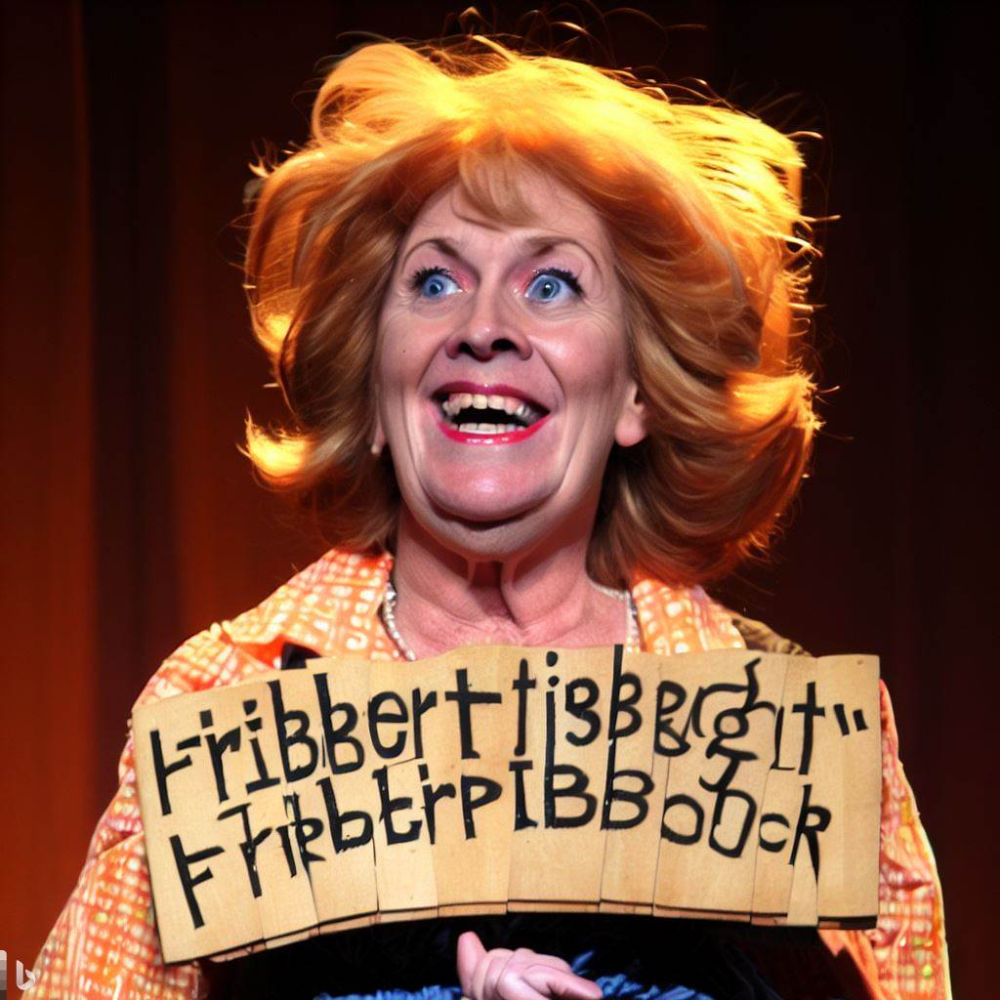

Exploring the Flibbertigibbet's Chronicles: Unraveling the Whimsical World
Discover the magical world of flibbertigibbet creatures and their enchanting tales.
The world of whimsy is incomplete without the flibbertigibbets, those enigmatic creatures that captivate with their mischievous nature and ethereal presence. Let's unravel their secrets and discover their fascinating characteristics.
Appearance and Behavior
Flibbertigibbets are known for their vibrant colors and peculiar physical traits. Their kaleidoscopic wings shimmer with iridescence, and their eyes gleam with a playful twinkle. They have an uncanny ability to blend seamlessly into their surroundings, making them elusive and mysterious beings.
Magical Abilities
These whimsical creatures possess extraordinary magical abilities that often defy logic. They can manipulate the elements, summon enchantments, and communicate through telepathy. Some legends even speak of their power to grant wishes and bring good fortune to those who encounter them.
The World of Flibbertigibbets
Habitats and Habitual Shenanigans
Flibbertigibbets are known to reside in mystical realms, hidden deep within enchanted forests or atop lofty mountain peaks. They create intricate dwellings adorned with luminescent flowers and whimsical decor. These mischievous creatures are infamous for their habitual shenanigans, playing pranks on unsuspecting travelers or luring them into delightful hootenannies.
Interaction with Humans
Flibbertigibbets have a complex relationship with humans. Some folklore portrays them as protectors of nature and guardians of ancient wisdom, while others depict them as tricksters leading humans astray. Discover the varying tales of encounters, from heartwarming friendships to uproarious kerfuffles, between these whimsical creatures and humans.
Unveiling the Flibbertigibbet Legends
Legendary Tales and Mythical Lore
The rich tapestry of flibbertigibbet legends weaves a captivating narrative. Explore ancient texts, oral traditions, and historical accounts to unravel the mythical lore surrounding these elusive beings. Immerse yourself in stories of bravery, love, and mischief passed down through generations, each painting a vivid picture of the whimsical world they inhabit.
Whimsical Artifacts and Artistry
Delve into the realm of flibbertigibbet artifacts and witness the exquisite craftsmanship of whimsical artistry. Discover enchanted trinkets, shimmering crystals, and magical instruments said to possess otherworldly powers. Let your imagination soar 